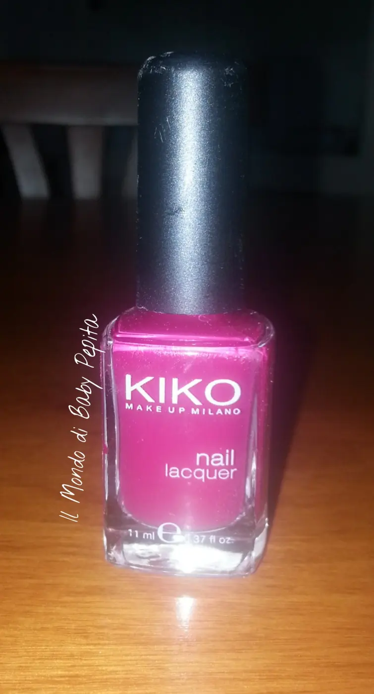
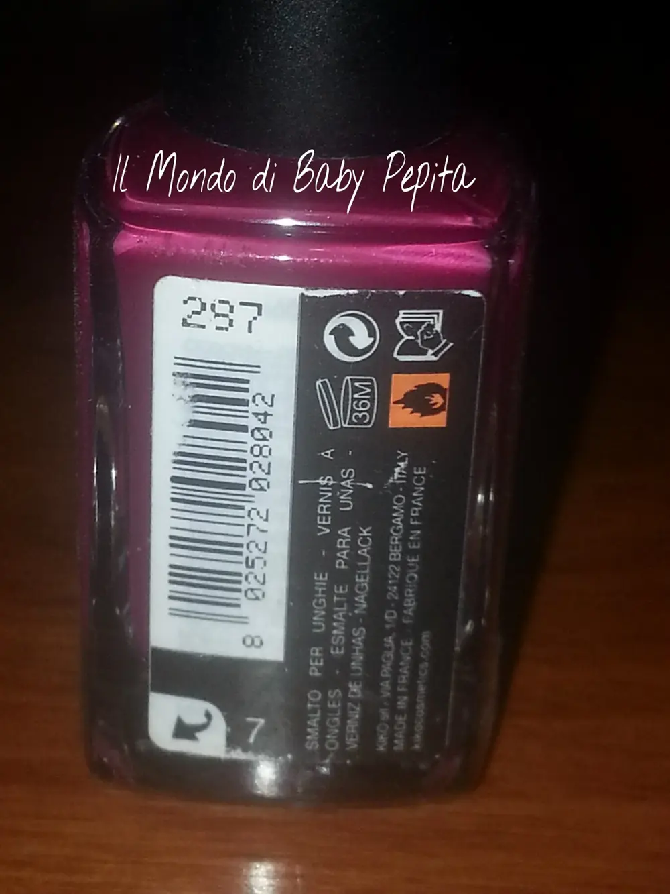
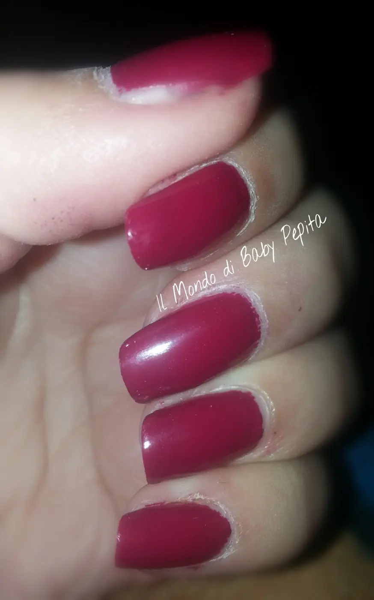
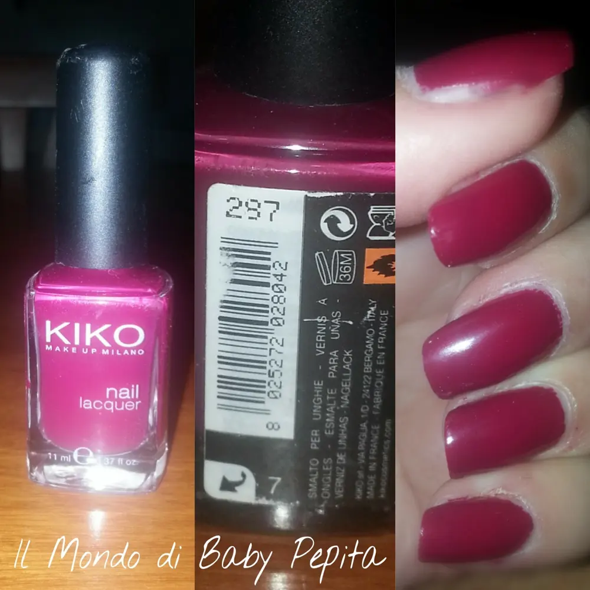

287 mail lacquer - smalto Kiko
Salve ragazzi. .
Oggi pomeriggio mi sono data alla manicure, viste le condizioni delle mie unghiette ultimamente. .
Ho approfittato soprattutto per sistemare un pò alcune unghia che ahimè si erano spezzate e poiché non amo pasticciare con le nail art quando sono corte ho optato per un semplice colore ma ad effetto. .
Ho scelto dunque un colore Kiko - linea nail lacquer il colore è il numero 287 . .
un rosso carminio scuro. .
Bello davvero. .

Dalla foto sembra più un tendente al fucsia ma in realtà da vicino è più su un rosso scuro. .
Purtroppo l'effetto del flash fa sfalsare decisamente i colori.

Trovo questo colore elegante ed un pizzico anche sensuale. . Molto femminile, adatto sia a ragazze ma anche a signore più mature.
Di facile stesura, il 287 di Kiko è di ottima coprenza e con effetto lucido . .
Facendo una seconda passata diventa lucidissimo anche senza il bisogno del top coat. .
La durata è molto resistente . .
A me di solito gli smalti durano bene bene 2 settimane se non sono scadenti questi della Kiko durano 10 giorni buoni poi iniziano a intaccarsi. .

Se non erro ora i nail lacquer la kiko li ha ad un buon prezzo di 1.90€
Se non avete ancora questo colore vi consiglio di prenderlo perché è davvero un colore da tenere nella collezione smalti . .
E poi vabbè la kiko è kiko ^_^
